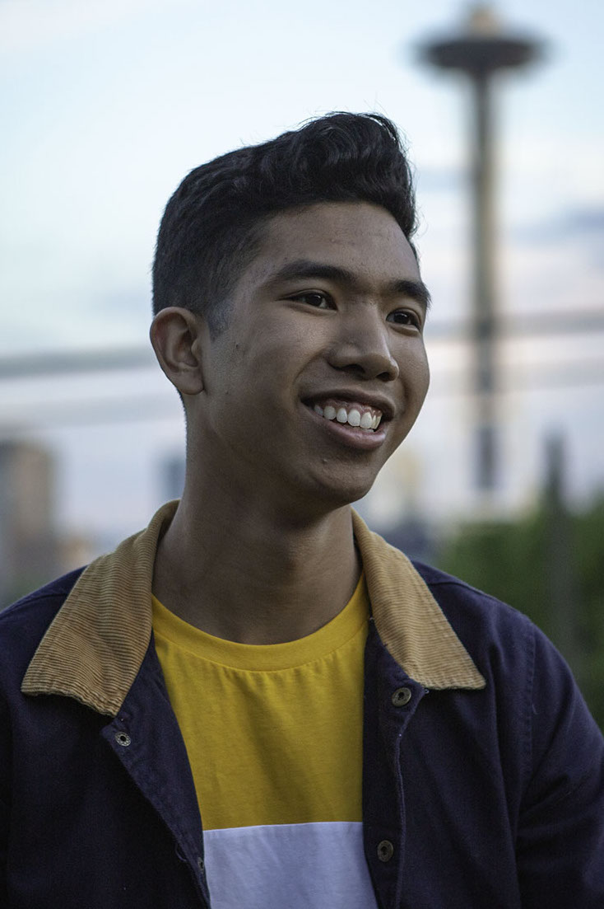

Hey, I'm Edison Soliman, a 19-year old college student currently attending the University of Washington in Bothell. I've always been into art ever since I was in the 6th grade, but it wasn't until my senior-year of high school where I found out that I loved doing portraits the most. My first few portraits that I made were of my two nephews and niece. Luckly my piece of my nephew with the fishes won a competetion which made me feel like I was doing the right thing. Ever since then, I've wanted to create this business where I could keep on portaying people's likeness in an art form, but with a twist in the background and foreground.